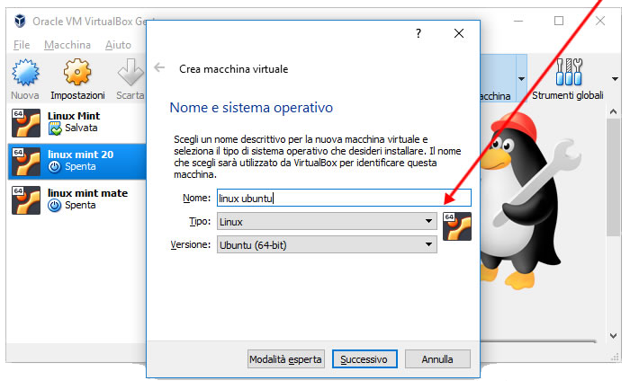
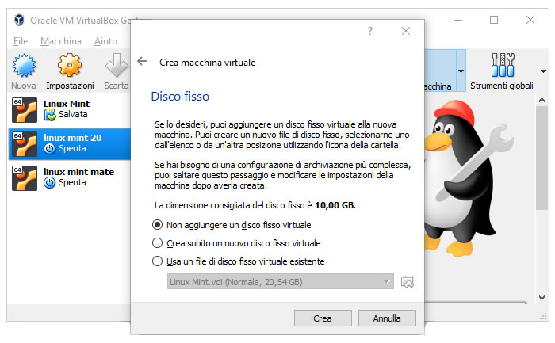
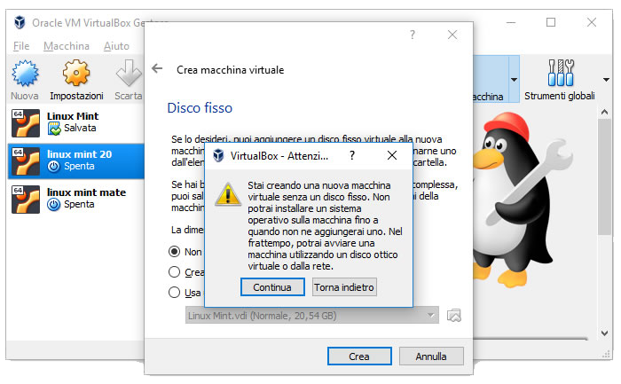
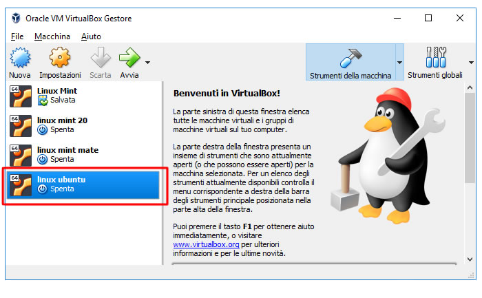
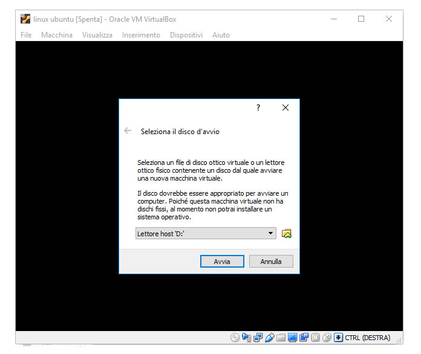
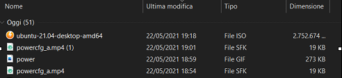
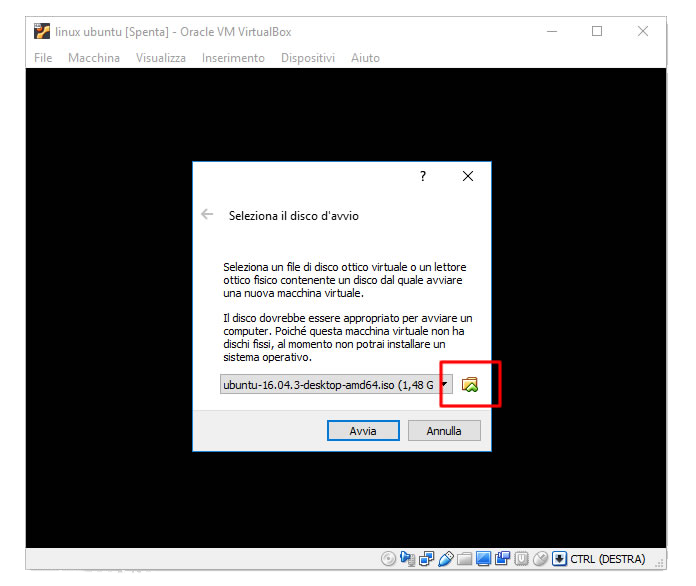
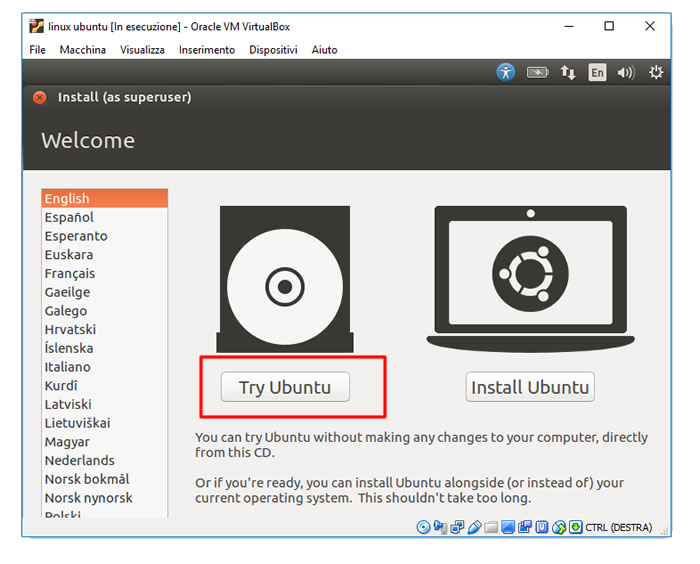

Cosa sono ?
Una macchina virtuale, comunemente abbreviata in VM, non è diversa da qualsiasi altro computer fisico.
Ha una CPU, memoria, dischi per l'archiviazione dei file e si può connettere
a Internet, se necessario. Mentre le parti che costituiscono il computer,
definite hardware, sono fisiche e tangibili, le VM vengono spesso considerate computer virtuali o computer
definiti da software in server fisici ed esistono solo sotto forma di codice.
Come si installa una macchina virtuale?
Per installare una macchina virtuale bisogna disporre di uno dei software
più usato per l'utilizzo di macchine virtuali "Virtual Box".
Cos'è Virtual Box? Virtual Box è uno dei software di emulazione più utilizzati.
Si può liberamente scaricare dal sito virtualbox.org e installare su Windows o sul Mac.
Ecco il tutorial per utilizzare una macchina virtuale sul prorpio pc .
-
Il primo passo per avere Linux su macchina virtuale è installare Virtual Box cliccando il pulsante qui sotto :

-
Il secondo passo è installare il file iso cliccando come prima nel pulsante qui sotto:
-
Ora ci saranno una serie di immagini per spiegare i passaggi da fare
Passo 1: Per creare una nuova macchina virtuale clicco su Nuova.
Si trova sul menù in alto a sinistra.

-
Passo 2: Nella schermata successiva digito il sistema operativo che voglio emulare sulla macchina virtuale.
Poi clicco sul pulsante Successivo.
 -
Passo 3: Ora configuro il disco fisso virtuale.
Per il momento non aggiungo nessun hard disk.
Posso sempre aggiungerlo dopo. Poi clicco sul pulsante Crea.

-
Passo 4: Virtual Box mi avvisa che senza un disco virtuale non potrò installare un sistema operativo sulla macchina.
Per il momento non mi interessa perché voglio far girare Linux in modalità live.
Quindi clicco su Continua.
 -
Passo 5: Ho creato la macchina virtuale.
La nuova macchina Linux Ubuntu è stata aggiunta all'elenco sulla sinistra.
 -
Passo 6: Per il momento è ancora spenta.
Quindi clicco sulla macchina virtuale appena creata per avviarla.

-
Passo 7: Si apre una nuova finestra con la procedura di avvio ( boot ) del computer virtuale.
Non essendoci ancora un s.o. la macchina chiede di inserire un disco di avvio.
 -
Passo 8: Ora abbiamo bisogno dell'iso scaricata prima , quindi clicco sull'icona gialla
della cartella e seleziono il file ISO di Linux appena scaricato sul PC. Poi clicco sul pulsante Avvia.
 -
Passo 9: Si avvia il disco di installazione di Ubuntu.
Alla prima schermata scelgo la lingua sul menu di sinistra e clicco su Try Ubuntu ( o Prova Ubuntu ).
 -
Passo 10: Finalmente si apre il desktop di Ubuntu con le icone e i comandi.
A tutti gli effetti è il sistema operativo Ubuntu perfettamente funzionante.
 -
Passo 11: Ho virtualizzato Linux sul PC Windows.
Adesso posso provare il sistema operativo Ubuntu sul mio PC Windows senza installarlo.

Le funzionalità principali:
Provare i nuovi sistemi operativi
-
Esegui software vecchi o incompatibili
Sviluppare software per altre piattaforme
Gestire i potenziali malware in modo sicuro
Provare i comandi